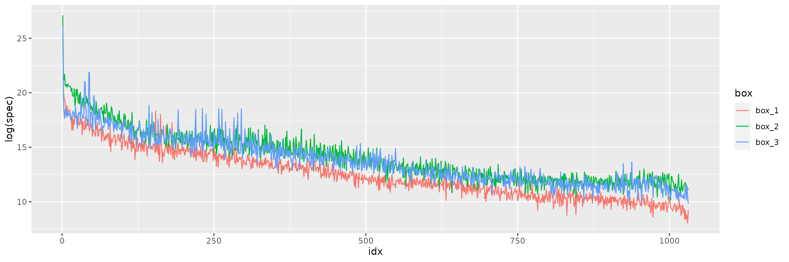

The FOTO (Fourier Transform Textural Ordination) method uses a principal component analysis (PCA) on radially averaged 2D fourier spectra to characterize (greyscale) image texture (of canopies). Here, I’ll explain the underlying algorithm, with a worked example. This should give you a better insight in how the algorithm works and how some of the parameters influence your analysis.
Note that the three boxes have very different textures.
The next step in the algorithm is to transform the data using a Fourier decomposition.
# fft transform
fftim_1 <- Mod(stats::fft(im_1))^2
fftim_2 <- Mod(stats::fft(im_2))^2
fftim_3 <- Mod(stats::fft(im_3))^2The data now need to be radially averaged, so we calculate the distance relative to the center of the image.
# calculate distance from the center of the image
offset <- ceiling(dim(im_1)[1] / 2)
# define distance matrix
# r is rounded to an integer by zonal
distance_mask <- sqrt((col(im_1) - offset)^2 + (row(im_1) - offset)^2)We first back convert all data to terra objects
(rasters), to make the raster math easier.
# suppress warning on missing extent (which
# is normal)
fftim_1 <- terra::rast(fftim_1)
fftim_2 <- terra::rast(fftim_2)
fftim_3 <- terra::rast(fftim_3)
distance_mask <- terra::rast(distance_mask)Below you see the concentric mask and the 2D FFT frequency plot. Note, unlike most conventional plots the data is not centered on 0.

For all FFT spectra the data will be radially averaged, removing any
directional components from the data. The terra zonal()
function is used to do this efficiently.
Plotting the averaged spectra shows subtle differences between the
different textures. The foto package calculates these
spectra for fixed zones or moving windows and uses these as input for a
subsequent PCA analysis - with the first three principal components (PC)
reported.

Note that decreasing the number of pixels in the analysis will reduce
the spectra size. With fewer features used in the PCA to discriminate
different textures results will be less nuanced. Also note that the
foto package discards the low order features (applies a low
pass filter) to remove the underlying image mean. This can be turned of
if desired.